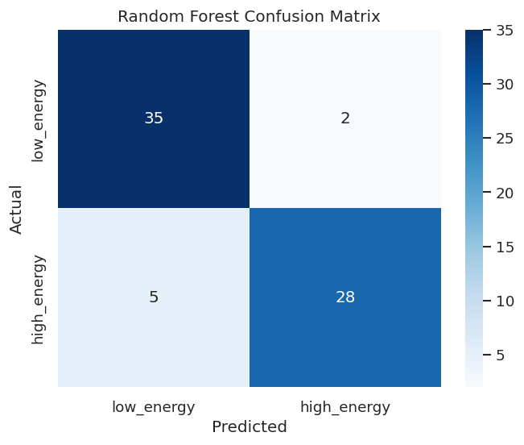
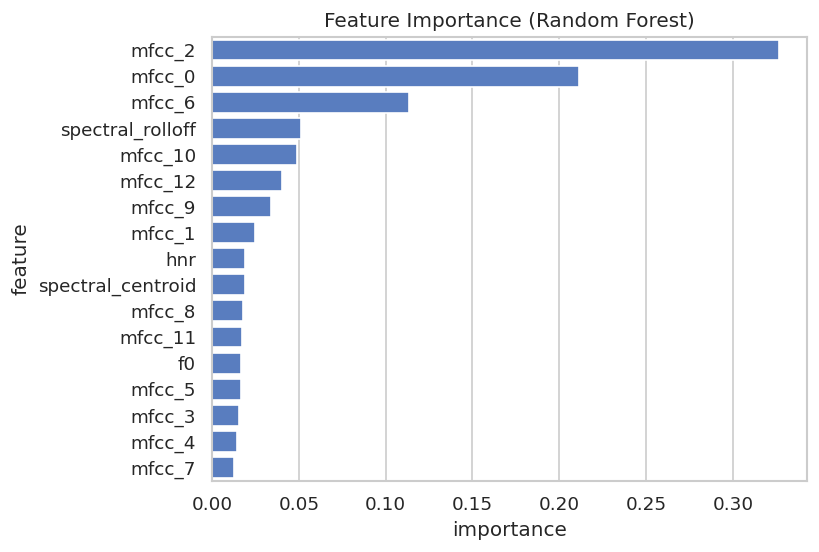

Enhancing music recommendation by classifying vocal energy level from acoustic features extracted from singing recordings.
Project Summary
This project investigates whether acoustic features extracted from a singing voice can reliably classify the singer's vocal technique — and, by extension, the emotional energy of a music track. We use the VocalSet dataset, a collection of professional singers performing identical musical material across multiple vocal techniques, focusing on two: belt (high-energy) and breathy (low-energy).
Using librosa and Praat, we extract four acoustic features per audio clip — fundamental frequency (f0), spectral centroid, spectral rolloff, and harmonic-to-noise ratio (HNR) — along with 13 MFCC coefficients. Three classifiers are trained and evaluated: Logistic Regression, Random Forest, and XGBoost. The best-performing model is deployed as a live inference API on Google Cloud Run.
Project Objective
Determine whether a machine learning classifier trained on acoustic features of vocal technique can accurately predict the arousal level (high-energy vs. low-energy) of a singing recording — without access to lyrical content, genre metadata, or listener ratings.
A successful classifier would allow music recommendation systems to infer emotional intensity directly from the audio signal, enabling mood-based filtering that generalizes across genres and languages.
Research Questions & Hypotheses
Dataset
VocalSet is a publicly available singing voice dataset containing recordings from 20 professional singers (9 female, 11 male) performing musical material across 17 vocal techniques. We subset the dataset to the two techniques most clearly associated with opposing arousal levels: belt and breathy. After feature extraction and quality filtering, the working dataset contains approximately 750 audio clips with balanced class representation.
Model Results
XGBoost reached the highest accuracy at 92.8%, with Logistic Regression close behind at 91.4%. Logistic Regression was selected for deployment for its simplicity and interpretability.

Figure 1 — Confusion Matrix (Logistic Regression + MFCC)
Near-perfect separation on the held-out test set.

Figure 2 — Feature Importance (Random Forest)
MFCC coefficients account for the majority of predictive power.
Live Inference
The deployed Logistic Regression model is accessible via a FastAPI inference
service hosted on Google Cloud Run. Upload a .wav audio file to
receive a real-time vocal affect prediction, including the predicted class,
confidence score, class probabilities, and extracted acoustic features.